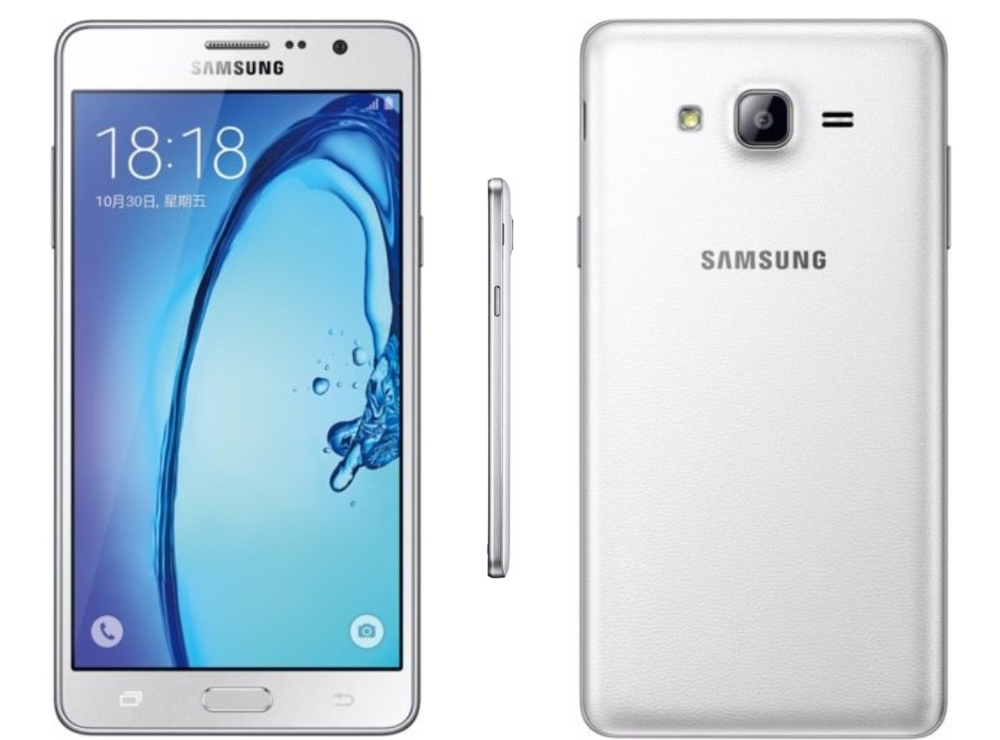

Samsung Galaxy On7 (2015) (samsung-on7)
Jump to navigation
Jump to search
|
 Samsung Galaxy On7 (2015) Samsung Galaxy Wide (G600S) | |
| Manufacturer | Samsung |
|---|---|
| Name | Galaxy On7 (2015) |
| Codename | samsung-o7 |
| Released | 2015 |
| Category | testing |
| Original software | Android 5.1.1 or 6.0.1 with Linux Kernel version 3.10.49 |
| postmarketOS kernel | 5.15.0 |
| Hardware | |
| Chipset | Qualcomm Snapdragon 410 (MSM8916) |
| CPU | Quad-core 1.2 GHz Cortex-A53 |
| GPU | Qualcomm Adreno 306 |
| Display | 1280x720 TFT |
| Storage | 8GB/16GB |
| Memory | 1.5GB/2GB |
| Architecture | aarch64 |
{kind=link}
| USB Networking |
Works
|
|---|---|
| Flashing |
Works
|
| Touchscreen | |
| Display |
Works
|
| WiFi |
Works
|
| FDE | |
| Mainline |
Works
|
| Battery | |
| 3D Acceleration |
Works
|
| Audio | |
| Bluetooth |
Works
|
| Camera | |
| GPS | |
| Mobile data | |
| SMS | |
| Calls | |
| USB OTG |
Partial
|
| NFC | |
| Accelerometer | |
|---|---|
| Magnetometer | |
| Ambient Light | |
| Proximity | |
| Hall Effect | |
| Barometer | |
| Power Sensor | |
| Camera Flash | |
|---|---|
| Keyboard | |
| Touchpad | |
| USB-A | |
| HDMI/DP | |
| Ir TX | |
| Ir RX | |
| Stylus | |
| Haptics | |
| Ethernet | |
| FOSS bootloader | |
|
This device is based on the Snapdragon 410. See the SoC page for common tips, guides and troubleshooting steps |
Contents
Contributors
- jja2000
- Minecrell (and others from the msm8916-mainline team)
Maintainer(s)
- jja2000
- The MSM8916-Mainline team
Users owning this device
Versions and naming schemes
The On7 has a couple of versions that got released:
- SM-G6000: China Open Release (seems to be o7lte-chn in downstream sources)
- SM-G600F: Turkey Release (might be o7lte-swa in downstream sources, needs more research)
- SM-G600FY: Bangladesh/Brazil/Cambodia/India/Indonesia/Morocco/Nepal/Philippines/Sri Lanka/Thailand/UAE/Vietnam Release (seems to be o7lte-swa (Southwest-Asia?) in downstream sources), shares name with On7 Pro, which may be slightly different. Needs more research.
- SM-G600S: Korean Release, Also known as Samsung Galaxy Wide (seems to be on7lte-kor/on7n in downstream sources)
How compatible these devices are with eachother is unclear. If anyone has one of these devices and wants to test out mainline, lmk on Matrix/IRC by mentioning jja2000
How to enter flash mode
Download mode: When turned off hold Power + Volume Up + Home
lk2nd Fastboot: Boot up the device after installation
Installation
lk2nd is a secondary bootloader that provides a standard fastboot interface, which can be used to boot postmarketOS without android boot flashed or pmbootstrap flasher flash_kernel.
- Download lk2nd-msm8916.img from Releases page on Github.
- Boot your phone to bootloader (Odin/Download) mode by holding Volume Down and Home while powering up.
- Follow lk2nd instructions to install lk2nd. Basically flash it to boot partition (
heimdall flash --BOOT lk2nd-msm8916.img) - Follow Qualcomm_Snapdragon_410/412_(MSM8916)#Installation to install postmarketOS.
| Note: Enter lk2nd fastboot mode by pressing only Volume Down + Power (without Home). Pressing Home additionally will bring you to the Samsung Download mode. |
Mainline Kernel Status
| Component | Model | Mainline kernel driver | Status | Useful info |
|---|---|---|---|---|
| RGB LED | - | GPIO | Not yet added |
|
| MicroUSB | - | Yes | Working | |
| eMMC | sdhc_1 | Yes | Working | |
| SD Card slot | sdhc_2 | Yes | Working |
|
| Battery/Charging/Fuelgauge | Siliconmitus SM5703 | None | ? | |
| Volume/Power/Home keys | GPIO | Yes | Working |
|
| Capacitive keys | ? | ? | ? | |
| Accelerometer | STMicroelectronics K2HH | Yes | Not yet added | Orientation matters, may not work without mount-matrix
|
| Display | Samsung S6D7AA0X62_BV050HDM or Illitek ILI9881C_SKI550002 | Yes, created using lmdpdg | Working | Brightness commands result in noise, same as other MSM8916 without backlight ic (drivers)
|
| Backlight IC | Texas Instruments LM3632 | Incomplete | Worked around | Backlight driver is incomplete and broken. Unless fixed dcs will be used over this.
|
| Audio | ? | ? | ? | |
| Touch Screen | Zinitix ZT7548 | None (yet) | Needs testing on Mis012's driver |
|
| USB Switch (MUIC) | Siliconmitus SM5703 | Yes (SM5502 driver) | Added to DT in kernel fork | USB device mode and charger detection works. OTG does not.
|
| Vibrator | Siliconmitus SM5703 Vibrator | None | Could be hooked up to the other SM5703 related drivers, not sure | |
| Ambient Light Sensor | Capella Micro CM36672p | None, but this mailinglist submission could be reused | Not yet added |
|
| Proximity Sensor | Sensortek STK3013 | None | No driver made |
Datasheet
|
| Hall Sensor | Hall IC | Yes | Not yet added |
|
| GPU | Adreno 306 | Yes | Working | |
| Wi-Fi | WNC3620 | Yes | Working | |
| Bluetooth | WCN3620 | Yes | Working | |
| GPS | ? | ? | ? | |
| Front camera | Samsung S5K5E3 | No camera driver, could use CAMSS in the future | No driver made | |
| Main camera | Samsung S5K3L2 | No camera driver, could use CAMSS in the future | No driver made |
Will be filled in and ameliorated later when I get the device